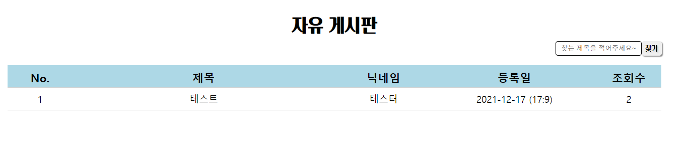

| 이름 | 김현묵 |
|---|---|
| 생년월일 | 1995년 4월 18일 |
| 주소 | 경기도 부천시 괴안동 |
| gusanr4200@naver.com | |
| 학력 | 중부대학교 - 4년제 애완동물자원학과 (졸업) 2012.03 ~ 2020.08 |
| 병역사항 | [군필] 2015.02 ~ 2016.11 육군 병장 제대 |
| 경력 | 애드플래너 웹 퍼블리셔 (2020.09 ~ 2021.09) |
자기소개
안녕하세요 저는 웹 개발자가 꿈인 김현묵입니다. 웹 개발자라고 말한 이유는 프론트엔드 백엔드에 구분없이 배우고 알아가고 싶어서 입니다.
꿈이라고 한 이유는 아직 부족한 점도 많고 개발자라고 칭하기엔 제가 알고 있는 건 매우 좁은 폭이라고 생각해서입니다.
저는 4년제 대학을 나왔지만 코딩과 관련없는 학과를 나왔습니다. 막상 나와보니 제가 생각한 것이랑 많이 달랐습니다. 저는 그래서 저에게 맞는 일을
찾아보다 코딩하는 것을 보고 흥미가 생겨 시작하게되었습니다. 학원에서는 중간중간 포기자도 나왔고 막힐때도 있었지만 이해하가며 문제점을 하나씩
풀어갈때마다 재미를 느꼇고 실제로 프로젝트로 홈페이지를 만들었을때에 뿌듯함을 느꼈습니다. 1년동안 회사에서 홈페이지 제작도 하였고 카페 24 리셀러를
통해 도메인 호스팅 관리 했습니다. 웹 개발에 있어 부족한 점을 느끼고 공부를 하고있습니다.
현재는 node-js 관련된 기능들
리액트, 뷰와 같은 라이브러리와 타입스크립트 등을 공부하고있습니다. 하지만 혼자 찾아보고 공부하기엔 현업에서 어떻게 응용되고 사용되는지 알 수 없고
아직 기본적인 공부만 하는 상태라 여러 방면에 기능들과 응용하는대 있어서 많이 부족한 점이 많습니다. 하지만 코딩을 하면서 만들어가는 재미를 느꼈고
조금더 다체로운 기능을 구현하고 싶다는 생각을 했습니다. 그렇기에 찾아보고 직접 만들어보면서 구조와 작동원리를 이해해가며 프론트엔드에 국한되지 않고
다른 언어도 공부해보고 싶다고 생각했습니다. 하지만 아직 프론트엔드도 완벽하지 않기에 프론트엔드 분야로 공부를 하고 있습니다.
경력사항
저는 1년간 AD회사에서 웹 퍼블리셔로 일했었습니다. 업무는 프론트엔드에 가까웠지만 PHP를 다루며 그누보드를 기반으로한 홈페이지 제작이었습니다.
그누보드를 이용한 이유는 게시판기능과 관리자페이지가 잘 갖춰있어 빠른 제작이 가능하여 장점이라 생각했습니다.
form을 이용해 주로 고객상담관련 홈페이지를 제작하였으며 병원,기업 소개,대출 등 홈페이지 제작했었습니다.
디자인은 따로 디자이너분들이 있었기 때문에 하지않았습니다. 또한 나아가 안드로이드 슈트디오로 JAVA 언어 기반에 어플을 제작하여 구글스토어에도 등록하는
일도 하였습니다. JAVA는 배운적은 없지만 일단 안드로이드 스튜디오는 틀이 갖춰있어서 일을 배우면서 어플을 제작하였습니다.
그만둔 이유
회사를 그만둔 이유 앞에서 말했듯이 AD 광고회사에서 웹 개발을 하다 보니 전문적인 기술보다는 빠른제작과 상담창을 통한 광고효율 증대를 목표로
홈페이지 제작을 하였습니다. 홈페이지 제작을 하다 보면서 같은 홈페이지에 디자인 변경만 하다보니 다른 기술적인 것들이 눈에 들어오기 시작했고 PHP말고도
라이브러리나 다른 곳은 어떤 개발 환경으로 홈페이지 제작을 할까 궁금해졌고 혼자서는 한계가 있다고 생각하여 조금더 전문적인 회사에 들어가 현업에서 사용되는
기술들을 배우고 싶어서 전 직장을 관두게 되었습니다.
저는 코딩을 시작한 이후로 부터 현재까지 이 직업이 저의 적성의 맞는 직업이라고 생각합니다. 워낙 컴퓨터 앞에 오래 앉아 있는 시간이 많고 또한 컴퓨터 관련
된 일을 좋아하고 뭔가를 만드는 것도 좋아하는대 손재주가 없어 금방 망치는 편입니다. 코딩은 코드로만 구현하면 그 어떤 것도 만들 수 있고 구현할 수 있어
관심을 가지게 되었습니다. 앞에서 말했듯이 저는 아직 부족하점이 많습니다. 혼자서는 막히는 것도 많고 그래서 더욱 배우고 싶은것도 많기에 저는 회사와
함께 발전하는 사람이 되고싶습니다.
홈페이지 소개
취업 준비를 하며 포토폴리오와 자기소개서를 작성하다보니 나를 소개하는 홈페이지를 하나 만들어보자 했습니다.저를 간단히
소개하고 제가 사용가능한 언어와 기능들 및 제가 왜 이렇게 만들었는지에 대한 간단한 설명을 하고있습니다.
디자인도 좀 특이하게 만들어보고 싶었습니다. 저를 소개하고
저의 관한 홈페이지이기에 다른 홈페이지와 차별점을 두고 싶어 case 별로 구간을 나눠 그에 맞는 정보를 제공하고 있습니다.
전 직장에서는 디자인을 해보지 않았기에 디자인에 있어 약점이라고 생각합니다. 보통의 원페이지식 랜딩을 만들어 저 자신을
소개할수도 있었지만 남들과 같은 것은 보통 인상에 많이 남지 않을 것 같다는 생각을 평소에서도 하기에 조금더 특이하지만 정보를 제공하는
홈페이지이기에 불필요한 디자인보다는 기능적과 제가 설명하고자하는 목적을 전달하는대에 기준점을 두고있습니다.
HTML5
-

-
head
head 태그입니다. fontawesome 스크립트는 아이콘을 가져오기 위한 스크립트입니다. api 를 딱히 사용하지 않았습니다. 이 홈페이지에 기능들은 제가 직접 코딩한것들입니다.
-
body
body 태그 안에 소스입니다. 코드가 텅텅비어 보이는 이유는 반복되는 코드 사용을 줄이기위해 JSON 파일과 로 JSON 파일에 object 갯수를 체크해 생성했습니다. 이렇게 구성한 이유는 코드를 짤때 반복 되는 노가다 작업을 비효율적으로 생각합니다. 그렇기에 복잡하더라도 한 번 코딩을 해두면 쉽게 객체를 생성할수 있는 코딩을 지향합니다.
-
template
최근에 template 태그를 알게되었습니다. 사용법도 특이하고 즉시 렌더링 되지않아 사용자에게 숨길 수 있는 점도 좋다고 생각했습니다. 또한 복잡한 코딩 구조를 좀더 깔끔하게 정리할 수 있을거 같아서 사용하게 되었습니다. 사용해본 결과 개인적인 생각이지만 직관적으로 주석이나 id로 체크만 해놓는다면 조금 더 수정하는대 용이하다고 생각합니다. #main-section 에 들어갈 내용을 template 태그로 관리하고 id를 통해 구분하고 있습니다.
-
cube
배경에 cube 코드 입니다. 로 class cube에 함수를 주어서 만들었습니다.
Javascript
ajax라는 기능을 알게 되었을때 부터 를 사용할때 데이터를 JSON파일로 저장해 사용해왔습니다.
장단점이 있다고 생각하는대 장점은 한번 정해 놓은 틀에서 내용 추가할때 매우 용이 했습니다. JSON 파일에 형식에 맞게
추가만 해주면 되기에 내용 추가하기도 빠르고 간편했기 때문입니다. 단점은 코딩 하는 시간이 길고 단순한 반복 작업이 아닌
코드에 대한 이해도가 있어야 수정이 가능하다는 점에서 큰 수정 사항이 있을시에는 오래걸린다는 점 이라고 생각합니다.
json파일 입니다.
저는 jQuery사용을 줄이고 있습니다. jQuery를 편리하지만 공부에 있어서 도움이 되질 않는다고 생각합니다. 사용하며 느꼇던
점은 편리한 기능이 많아 홈페이지 제작에 있어 유리하였습니다. 하지만 수정 시에 변수지정을 하지 않아 코드가 굉장히 난잡해지는 경향이 있다고
생각합니다. 제이쿼리를 설치해야하며 코드가 길어질수록 속도또한 느려지는 것을 느꼇습니다. 그래서 최근 홈페이지 제작에 사용한 코딩을 순수
로 제작하여 바닐라 을 지향하고 있습니다.
mySlide
공부를 하면서 만든 슬라이드입니다. 순수 로 되어있고 처음엔 원리를 몰라서 클론코딩으로 만들다가 기능을 몇개 더 추가하여 만들었습니다. 만든 이유는 공부할겸도 있지만 jQuery API 사용이 싫어서 입니다. 물론 아직 부족한점도 많고 owl,bxslider,swiper 등 설치만으로 편리하고 더 많은 기능을 가진 슬라이드를 사용할 수 있지만 실제로 제작해보면서 슬라이드 기능을 이해하고 jquery api 슬라이드들이 제공하지 않는 기능을 만들어 사용하는 것에 중점을 뒀습니다.(현재 사이트에는 jQuery가 사용되지 않았습니다.)
함수에 object를 이용해 target, type, transition, pageScrollHeight, control, dot, dottype 을 설정할수
있습니다.
target은 슬라이드를 적용한 객체를 지정해주면 됩니다. target 을 제외한 모든 요소는 default 값이 존재하기 때문에 없어도
적용됩니다.
type 은 현재 nomal, scroll_fixed, scroll_fixed_url 3가지가 있는대 nomal을 제외한 기능은 재미겸 만든거라 실용성은
없습니다. scroll_fixed / scroll_fixed_url
클릭하면 적용된 페이지를 보실수 있습니다.
pageScrollHeight 는 scroll_fixed 와 scroll_fixed_url에 필요한 기능입니다.
밑에는 슬라이드 기능 예시들 입니다.
cube
함수로 cube를 만들어 target과 안에 content를 넣을수 있도록 매개변수를 지정했습니다.
Node-js
를 공부하면서 react,vue를 알게되면서 자연스레 node-js를 알게되었습니다. 미숙하지만 터미널을 통해 vue cli, react, node-sass, jquery, 슬라이드 등 을 설치해보았습니다.
node-sass

sass를 알게된이후로는 css작성을 scss파일로 저장해 사용하고있습니다. 부모 자식관계를 보기 편하고 css간에 중복 적용을 방지하는 점에서 편리하다고 느꼇고 처럼 mixin과 같은 기능으로 좀 더 편리하게 css를 작성할수 있다는 점에서 주로 사용하고있습니다.
cube라는 객체를 전부 다르게 적용하고 싶어 mixin 기능으로 만들었습니다.

적용한 모습입니다.
php
코딩을 배우면서 알아두면 좋다고 하여 를 배우게 되었습니다. 로 로그인 및 게시판 기능 등
여러가지 기능 구현을 해보았습니다. 에서 제가 선호하는 기능은 include 이며 공통 header 와 footer 를 넣기에
편리하다고 생각합니다. 단점은 수정할려고 코드를 보면 굉장히 복잡하며 include 된 파일을 찾아가 변수,함수 를 찾아야된다는 점이라고 생각합니다.
그누보드를 수정하면서 항상 느꼇던점입니다.
전 직장에서 그누보드로 홈페이지 제작을 하였습니다. 그누보드의 구조와 수정하는법을 어느정도 숙지하고 있으며 그누보드를 사용했던 이유는
로그인, 관리자 페이지, 게시판기능이 편리하여 사용했었습니다. 직접 제작하여 사용하고 싶다는 생각도 했지만 작업환경 상 시간문제로 그누보드를 수정
하는 것이 적합하였습니다. 실제로 다양하고, 편리한 기능을 제공하고 있고 심화된 기능들도 많았습니다.
단지
단지 홈페이지 보기
바나나 우유를 테마로 만든 홈페이지입니다. 팀 과제였기에 제가 맡은 파트를 설명드릴려고합니다. 왜 PHP 카테고리에 들어가있을까 의문이 드실 수 있지만
제가 맡은 부분이 PHP와 관련있어서입니다.
LOGIN
회원가입 폼입니다. 아이디 중복 확인이 가능하며 중복될시 회원가입이 안됩니다.
로그인 폼입니다. 로그인만 가능합니다....(아이디 비번 찾기 X)
단지 홈페이지 우측 상단에 햄버거 메뉴 아이콘을 누르면 로그인시에 아이디와 이름이 보입니다. 모든 페이지에 세션을 통해 공통적용됩니다.
이벤트-우리랑 사진 찍자!
이벤트 등록 폼입니다. 제목과 파일이 없을 경우 경고창이 뜨며 비로그인시 업로드가 불가능합니다.
이벤트 목록 페이지입니다. 보통 게시판과 같은 기능을 합니다. 게시물 8개가 넘어갈 시 두번째 페이지가 생성됩니다.
게시물 클릭시에 모습
게시판

위에 이벤트 게시판은 자유게시판을 응용해서 만든것입니다. 기본적인 게시판의 기능을 하고있습니다. 수정과 삭제도가능합니다.
mysql
를 사용하며 phpmyadmin을 설치하여 홈페이지를 관리하는법을 배웠습니다. 하지만 cafe24를 사용하다보니 phpmyadmin을 지원 안한다는 것을 보고 다른 mysql 사용법을 찾아보다 heidSQL을 사용하게되었습니다. 소스로 table을 만들어도되지만 더 직관적이고 쉽게 mysql 수정이 가능하여 사용하고있습니다. heidSQL로 쿼리 실행 모습